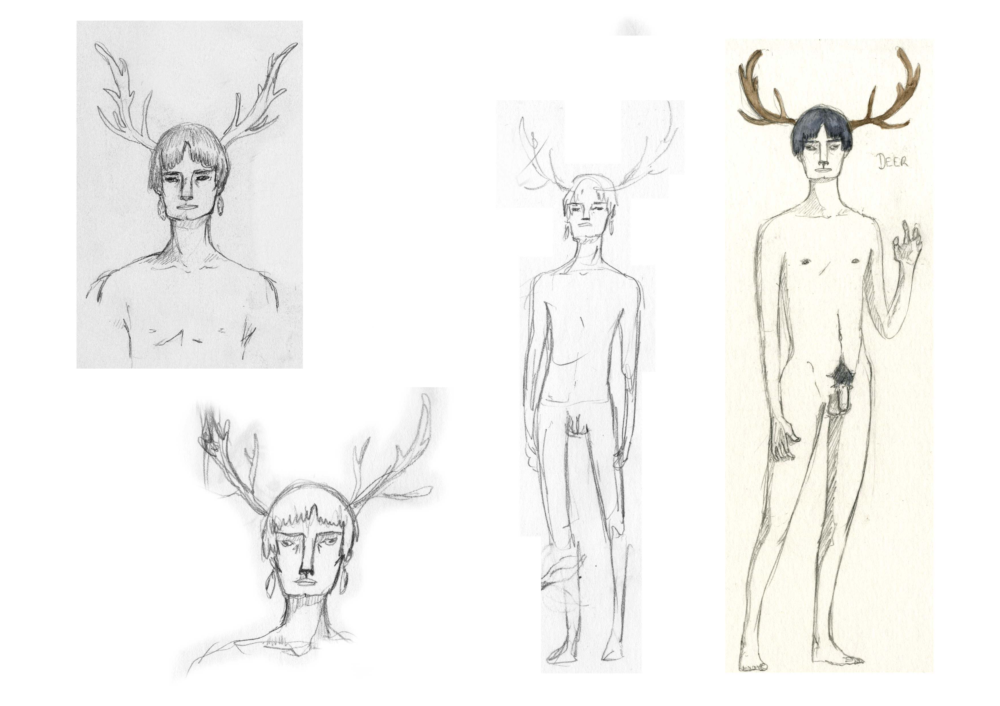
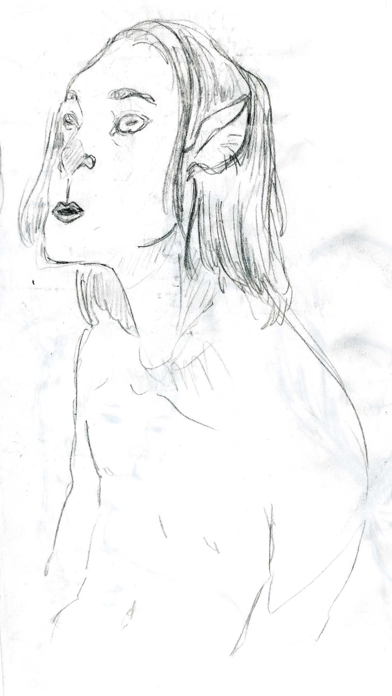
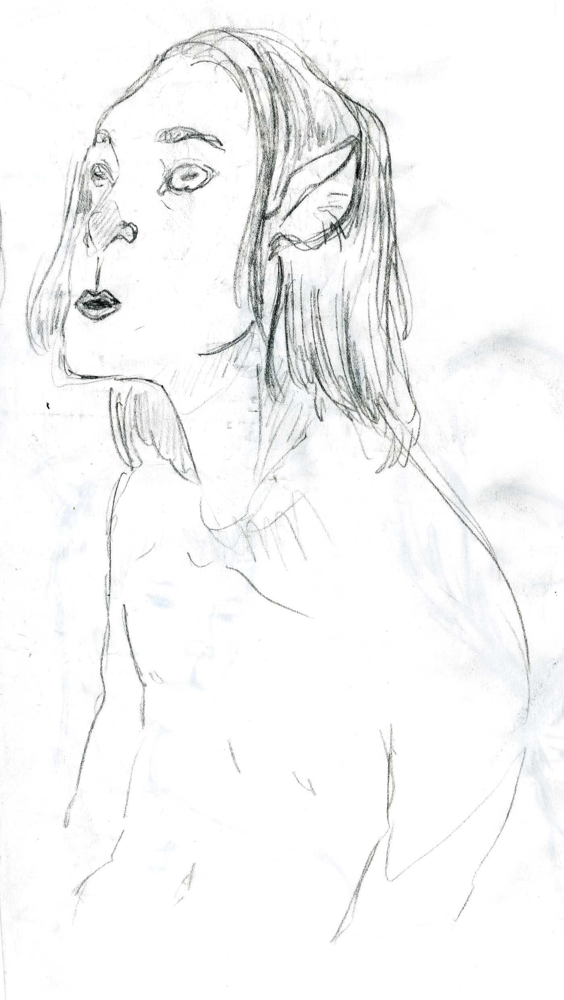

ÉPHÉMÈRE
Charles Ngombengombe, dancer, came to me with the will to make a short piece together, mixing dance and animation/video, right after his studies at P.A.R.T.S. Still in my first master year, I wanted to test and experiment lots of things, so I agreed in making the video part in this piece.

 


The animation had a different purpose here than in my first try two years earlier. It had a more illustrative, less interactive role. Charles wanted to talk about human and nature in « Éphémère », and I tried my best during four months to accompany this subject in a visual way. I also did the editing of the performance, of which you can see here an extract.
Ephémère from Cypria Donato on Vimeo.
Permalink to this page